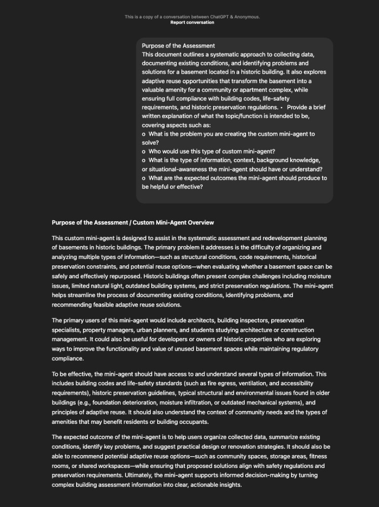

This assignment reviews custom-built mini-agents such as Custom GPTs (or comparable setups like Google Gems): how they are scoped, prompted, and evaluated in practice. The coursework asks for hands-on use of two public GPTs (one from the featured gallery, one aimed at the AEC industry), share links to those conversations, and written commentary on what worked and what did not.
Below, the three deliverables are summarized, a purpose-of-assessment exchange documents a custom mini-agent concept for basement conditions in a historic building (adaptive reuse, codes, life safety, and preservation), and the paragraph submitted with the assignment reflects on what it feels like to rely on an agent day to day.
Three deliverables (course outline)
- Use and review a Featured GPT. Browse public Custom GPTs at chatgpt.com/gpts (or a similar non-OpenAI setup). Pick one that interests you, use it for its intended purpose, and work through enough prompts to get a real result. Deliverable: link to the conversation (10 pts).
- Use and review an AEC-focused GPT. Find a GPT meant to help AEC professionals in any capacity. Use it as intended, including follow-up prompts if needed. Deliverable: link to the conversation (10 pts).
- Commentary on both GPTs. Brief notes on what worked, what could improve, and whether a Custom GPT is the right tool for each task. Deliverable: comments in the course portal, a short document upload, or similar (10 pts).
The featured GPT does not have to be AEC-specific; the point is to see how different domains structure agents and to borrow ideas.
Purpose of the assessment: custom mini-agent overview
The screenshot captures a shared-style ChatGPT thread titled Purpose of the Assessment. The user side frames a systematic approach to collecting data, documenting existing conditions, and identifying problems and solutions for a basement in a historic building, including adaptive reuse, building codes, life-safety requirements, and historic preservation. The assistant responds with a structured overview: the problem the agent solves, primary users (architects, preservation specialists, inspectors, owners, students, and related roles), the knowledge the agent should hold (codes, egress, accessibility, moisture and structure, preservation guidance, community context), and expected outcomes (organized findings, problem framing, and reuse strategies that stay compliant).

Submitted reflection
Using an agent for the first time feels surprisingly simple, yet it opens up a new way of handling everyday tasks. Instead of relying on fixed tools or complicated steps, you can just describe what you need, and the agent adjusts to it. This makes the experience feel flexible and personal, almost like having a helper who understands your intention from a few words. What stands out is how quickly it adapts, whether the task is practical, creative, or professional, so the interaction becomes more natural over time. As you get more comfortable expressing what you want, the agent becomes even more effective, turning short prompts into clear, useful results that fit your day-to-day needs.
Links & files
- ChatGPT GPTs gallery (featured public GPTs)
- Featured GPT (The Negotiator): conversation link
- AEC / professional practice GPT (Legal Contracts, lawyer-backed, not legal advice): conversation link
- Course submission: commentary via the assignment portal or uploaded document, per syllabus.